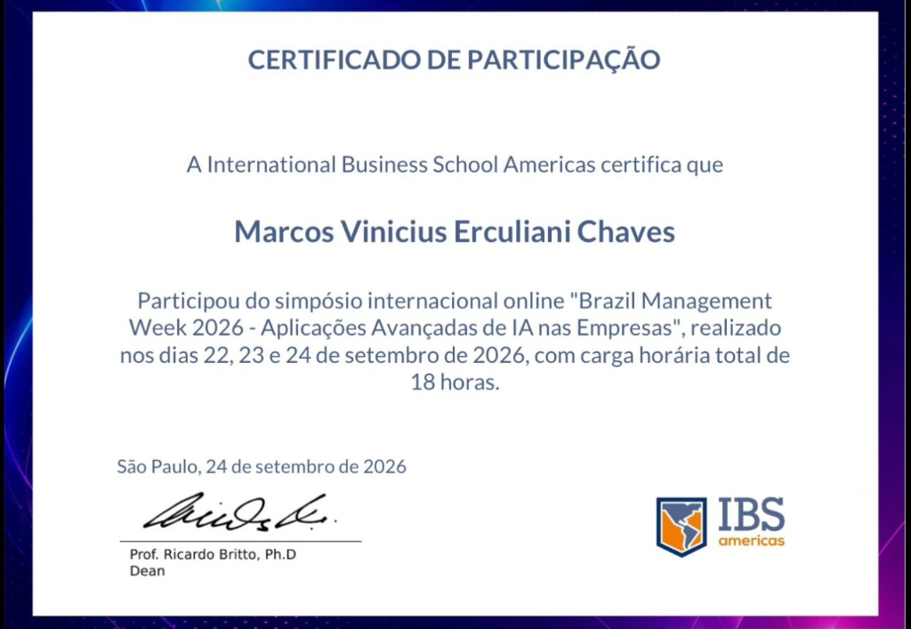
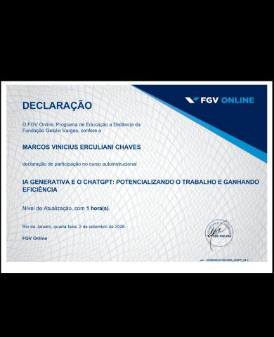
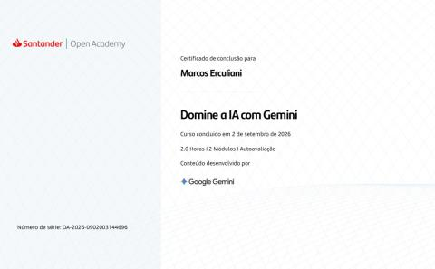
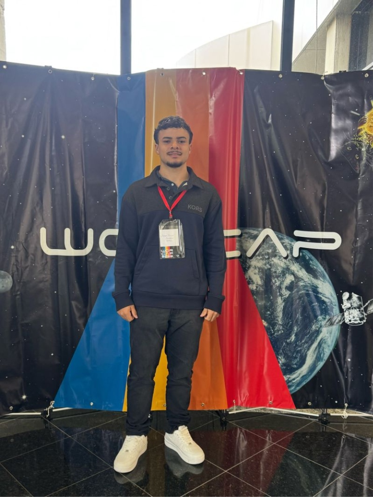
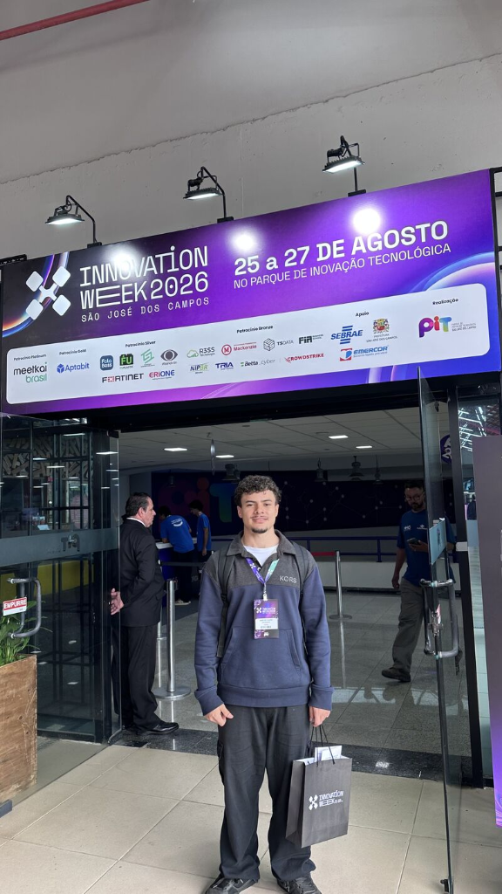

Graduação
Desenvolvimento de Software Multiplataforma
FATEC São José dos Campos
Formação superior tecnológica voltada a aplicações web, mobile, banco de dados, arquitetura em nuvem e desenvolvimento orientado a projetos integrados semestrais (API).
FATEC São José dos Campos • Desenvolvimento de Software Multiplataforma
Estudante de DSM na FATEC São José dos Campos. Busco oportunidade de estágio em tecnologia para atuar no desenvolvimento de aplicações web, mobile e sistemas orientados a dados, com foco em resolver problemas práticos e colaborar com equipes ágeis.
Desenvolvedor em formação
FATEC São José dos Campos • DSM
01
Aprendizagem por Projetos Integrados • FATEC DSM
Projetos semestrais desenvolvidos em equipe sob metodologia ágil Scrum, resolvendo desafios reais com entrega de software funcional.
02
Experiência corporativa e iniciativas autorais
Soluções desenvolvidas para contextos operacionais reais (Intercarta) e projetos pessoais/acadêmicos.
03
Apresentação detalhada
Formado como Técnico em Desenvolvimento de Sistemas pela ETEC e atualmente graduando em Desenvolvimento de Software Multiplataforma (DSM) na FATEC São José dos Campos.
Busco atuar profissionalmente através de estágio em tecnologia, aplicando conhecimentos em desenvolvimento web, mobile e sistemas back-end. Meu objetivo é evoluir como desenvolvedor de software, colaborando em projetos com metodologias ágeis e arquiteturas escaláveis.
Tenho especial afinidade por Front-end (React, TypeScript), Desenvolvimento Mobile (React Native/Expo), Back-end com Python e bancos relacionais. Minha experiência profissional como Jovem Aprendiz em logística na Intercarta fortaleceu minha disciplina, visão de processos e capacidade analítica.
Tecnologias com as quais já trabalhei
04
Qualificação e desenvolvimento contínuo
Formação acadêmica, certificações, cursos complementares e participações pertinentes ao curso de DSM.
Graduação
FATEC São José dos Campos
Formação superior tecnológica voltada a aplicações web, mobile, banco de dados, arquitetura em nuvem e desenvolvimento orientado a projetos integrados semestrais (API).
Vínculo profissional
Intercarta
Rotinas operacionais, conferência de notas fiscais (DANFE), agendamento de transportes e idealização de soluções internas de automação e conferência digital para armazém.
Curso técnico
ETEC
Formação técnica focada em lógica, programação orientada a objetos, modelagem de dados e interfaces, com desenvolvimento do FNCASH como TCC.
Certificação Internacional (18h)
IBS - International Business School Americas
Simpósio internacional online abordando o impacto da Inteligência Artificial em carreiras, automação, engenharia de software e liderança com professores e executivos do Brasil, EUA e Europa.

Ver certificado oficial ↗Certificação / Extensão
FGV Online — Fundação Getulio Vargas
Curso de atualização da FGV Online focado em aplicações práticas de Inteligência Artificial generativa, engenharia de prompts e ganho de produtividade no trabalho e no desenvolvimento.

Ver declaração oficial FGV ↗Certificação Profissional
Santander Open Academy & Google Gemini
Formação oficial desenvolvida pela equipe do Google Gemini em parceria com o Santander Open Academy: fundamentos e aplicações avançadas do ecossistema de modelos multimodais de IA do Google.

Ver certificado Santander / Google ↗Workshop Científico
INPE — Instituto Nacional de Pesquisas Espaciais
Participação no evento oficial do INPE em São José dos Campos: imersão em Inteligência Artificial, mesa redonda sobre Computação Aplicada e Emergência Climática, minicursos, sessões técnicas e networking com pesquisadores e setor aeroespacial.

Ver registro do evento ↗Feira Tecnológica & Inovação
FATEC / Parque de Inovação Tecnológica (PIT SJC)
Participação representando a FATEC no Parque de Inovação Tecnológica de SJC: contato com soluções de fronteira em robótica, automação industrial, interfaces neurais e ecossistema de startups e tecnologia.

Ver registro do evento ↗05
Contato
Se você tem uma vaga de estágio ou quer conversar sobre algum projeto, pode falar comigo por qualquer um dos canais abaixo.